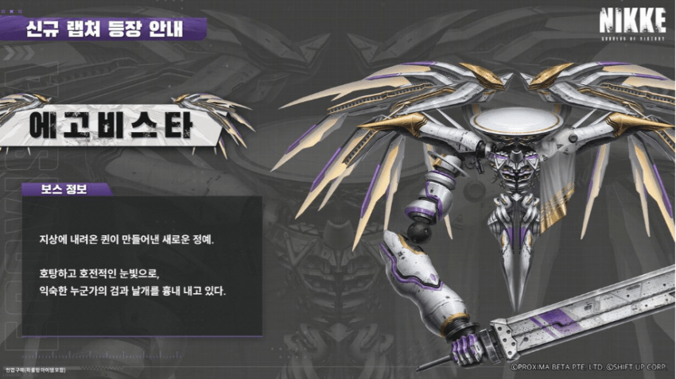

신규보스 에고비스타(Egovista)
INDEX
1. 에고비스타 패턴분석
2. 패턴 타임라인
1. 에고비스타 패턴분석
전격 약점 속성 신규보스 에고비스타입니다.
딜로스 패턴들이 꽤 많으며 모더니아 처럼 계속 어디론가 사라집니다.
패턴 한 번 보겠습니다.
1. 지열참
에고비스타의 조우 패턴인 지열참입니다.
여러번 리트하며 알아본 결과 3번 자리 고정 타격하는 패턴입니다.
엄폐 및 회피 다 가능하며 니케 추가 대미지가 붙는 패턴이므로 체급이 낮은 경우 엄폐하는걸 권장드립니다.
2. 비검파
엄폐 및 회피 가능한 투사체 패턴입니다.
다 맞으면 상당히 아프므로 최대한 엄폐 하는걸 추천드립니다.
순간적으로 어그로 판별이 안될 경우 ESC 컨 이용하여 어그로 판별 후 엄폐하시면 더 편하실거에요.
이 패턴은 2회 연속 나옵니다.
3. 파세격
횡으로 광역 공격하는 참격 패턴입니다.
엄폐 및 회피 가능하며 니케 추가 대미지가 적용됩니다.
쉴드가 있다면 파훼 가능합니다.
만약 피하실거면 휘두를 때 피한다고 생각하면 피격될 확률이 높습니다.
휘두르기 직전에 엄폐한다는 생각으로 피하시면 더 편하실거에요.
4. 양단: 1식
중간 일반 저지패턴입니다.
저지 간 간격이 꽤 넓게 나와 SR 니케로는 저지가 힘든 편입니다.
저지원 중간 쯤 타겟팅 하시고 RL 니케로 한번에 처리하시는게 편합니다.
저지 실패 시 전멸하며 성공 시 보스가 그로기 상태에 빠집니다.
이 때 그로기 시간이 꽤 긴 편입니다.
5. 천혈격
3번 자리 고정으로 공격하는 찌르기입니다.
엄폐 및 회피가 불가능하며 찌르기 피격 후 도트뎀(공격력의 60%) 이 들어옵니다.
2. 패턴 타임라인
3:00 - 2:57 3번 자리 고정 일격 (엄폐 및 회피 가능, 니케 추가 대미지)
2:47 - 2:40 2회 순차 공격 (엄폐 및 회피 가능)
2:38 - 2:34 광역 참격 (엄폐 및 회피 가능, 니케 추가 대미지)
2:32 - 2:24 일반 저지 패턴 (실패 시 전멸, 성공 이후 그로기)
2:10 - 2:04 3번 자리 고정 찌르기 공격 (엄폐 및 회피 불가, 피격 이후 도트 대미지)
1:56 - 1:48 2회 순차 공격 (엄폐 및 회피 가능)
1:47 - 1:44 광역 참격 2회 (엄폐 및 회피 가능, 니케 추가 대미지)
1:41 - 1:38 공격력 가장 높은 니케 대상 기관총 공격
1:35 - 1:28 2회 요격 가능한 투사체 6개 발사 (엄폐 및 회피 가능, 피격 시 기절, 도발 불가능)
1:19 - 1:13 속성 저지 3칸 (실패 시 전멸, 성공 이후 그로기)
1:05 - 1:02 3번 자리 고정 찌르기 공격 (엄폐 및 회피 불가, 피격 이후 도트 대미지)
1:00 - 0:58 공격력 가장 높은 니케 대상 기관총 공격
0:54 - 0:45 2회 순차 공격 (엄폐 및 회피 가능)
0:44 - 0:40 광역 참격 2회 (엄폐 및 회피 가능, 니케 추가 대미지)
0:39 - 0:37 공격력 가장 높은 니케 대상 기관총 공격
0:35 - 0:25 2회 요격 가능한 투사체 6개 발사 (엄폐 및 회피 가능, 피격 시 기절, 도발 불가능)
0:18 - 0:09 속성 저지 3칸 (실패 시 전멸, 성공 이후 그로기)
+) 노말, 하드 모두 일반 저지 진입 전 추가 패턴이 나올 수 있는 걸 확인했습니다.
일반 저지 진입 전
2회 요격 가능한 투사체 6개 발사 (엄폐 및 회피 가능, 피격 시 기절, 도발 불가능)
2회 순차 공격 (엄폐 및 회피 가능)
3번 자리 고정 찌르기 공격 (엄폐 및 회피 불가, 피격 이후 도트 대미지)
수행하고 중간 일반 저지 진입하게 됩니다.
타임라인은 참고용으로만 봐주세요.